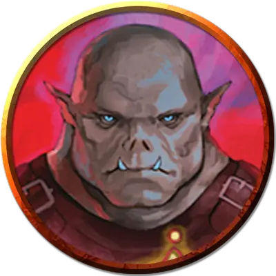

Мэгги Кинайс (2-го уровня)
Maggie Keeneyes (Tier 2)
Большой Великан (Огр), законно-нейтральный, именной НИП

Класс Доспеха 15 (кольчужная рубаха)
Хиты 114 (12к10 + 48)
Скорость 30 футов, плавая 30 футов
| мод | спас | ||
|---|---|---|---|
| СИЛ | 18 | +4 | +7 |
| ЛОВ | 14 | +2 | +2 |
| ТЕЛ | 18 | +4 | +7 |
| мод | спас | ||
|---|---|---|---|
| ИНТ | 14 | +2 | +2 |
| МДР | 16 | +3 | +3 |
| ХАР | 8 | −1 | −1 |
Навыки Атлетика +7, Восприятие +6, Проницательность +6, Убеждение +5
Иммунитет к состояниям испуг
Чувства тёмное зрение 60 футов, пассивное Восприятие 16
Языки Общий, Великаний
Опасность 5 (1800 опыта)
Бонус мастерства +3
Особенности
Боевая готовность. Мэгги и её союзники находящиеся в пределах 30 футов от неё, совершают броски инициативы с преимуществом, пока Мэгги дееспособна.
Толчок. Один раз во время каждого своего хода, после попадания по существу атакой, Мэгги может заставить существо совершить спасбросок Силы Сл 15; при провале отбрасывая его на 10 футов от Мэгги по горизонтали и сбивая его с ног.
Действия
Мультиатака. Мэгги совершает две атаки Гигантским молотом или Броском молота.
Гигантский молот. . Рукопашная атака оружием: +7 к попаданию, досягаемость 10 футов, одна цель. Попадание: 13 (2к8 + 4) дробящего урона.
Бросок молота. Дальнобойная атака оружием: +7 к попаданию, дистанция 20/60 футов, одна цель. Попадание: 9 (2к4 + 4) дробящего урона.
Бонусные действия
Воодушевление (1/день). Мэгги нацеливается на одно существо, которое она видит в пределах 30 футов, и подбадривает его словами поддержки. Цель получает 15 временных хитов, если она может видеть или слышать Мэгги.
Описание
Люди могут смеяться, когда 12-футовая огр заказывает выпивку в баре и говорит, что её зовут Мэгги, но смеются они недолго. Некоторые люди зацикливаются на её имени, её огромных размерах, её мускулах или оружии на её боку. Более мудрые люди обращают внимание на ярко-голубые глаза Мэгги. Всю её жизнь люди считали Мэгги глупой тупицей из-за её размера, но её глаза выдают ее ум. Она может читать других с первого взгляда, будь то в разговоре или на дуэли. Когда её глаза бегают взад и вперед по полю боя, они улавливают достаточно информации, чтобы дать союзникам преимущество в бою.
Все изменилось для Мэгги, когда она впервые приехала в Джигау и встретила Айо Джабе три недели назад. Она приехала в поисках наемной работы, чтобы свести концы с концами, но вместо этого нашла настоящего друга. Айо увидела ум в глазах Мэгги и очень хотела услышать ее мысли. Они быстро подружились, и Мэгги скорее умрёт, чем позволит причинить вред своему новому компаньону.
Мэгги любит поэзию и музыку с глубокими текстами, а также состязаться в остроумии с такими же умными людьми, как она. Она ненавидит стереотипы и скептически относится к тем, кто слишком быстро судит о других.
Примеры высказываний в бою
"Это была большая ошибка". "Тебе повезло, что мне не чуждо милосердие". "Сражайся умнее — и упорнее". "Люди не выигрывают бои, сражаясь честно".
Уровни Соперников
По мере того, как персонажи повышают свой уровень и получают новое снаряжение в ходе этого приключения, соперники набирают силу. Каждый соперник представлен тремя блоками характеристик.
СОПЕРНИКИ 2-го уровня
Соперники 2-го уровня уже знают, что их приключения заводят их в ужасные места, которые проверят их отвагу, но они сталкиваются с этими проблемами с высоко поднятой головой.